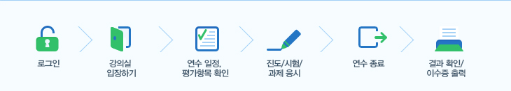

학습방법
홈 > 연수지원 > 학습방법
-

-
1. 로그인 후 사이버 강의실로 입장해주세요.
- - 방법1) 로그인 창 [과목선택] 클릭 → 사이버 강의실 입장
- - 방법2) [나의 강의실] 메뉴 → [강의실 입장하기] 클릭 → 사이버 강의실 입장
-
1. 로그인 후 사이버 강의실로 입장해주세요.
-
- 2. 나의 연수 일정과 평가 항목을 확인해주세요.
-
- 3. 수강하는 연수의 진도/시험/과제 제출 여부를 확인하신 후 연수 종료 기간 내 완료해주세요.
-
- 4. 이수 결과를 확인하시고 이수증을 출력해주세요.
-
참고사항
- 1. 연수는 수강 기간 내 자유롭게 학습하실 수 있으며, 진도는 매 차시 마다 누적되기 때문에 매일 접속하지 않으셔도 됩니다.
- 2. 1일 평균 학습시간은 1~2시간 정도입니다. (2~3강 정도가 적당합니다.)
- 3. 강의 교안은 다운로드용 파일 형태로 제공되며, 학습 영상에서 다운로드가 가능합니다.
- 4. 청강 기간은 연수 종료 후부터 1년까지로 추가로 학습하실 수 있습니다.